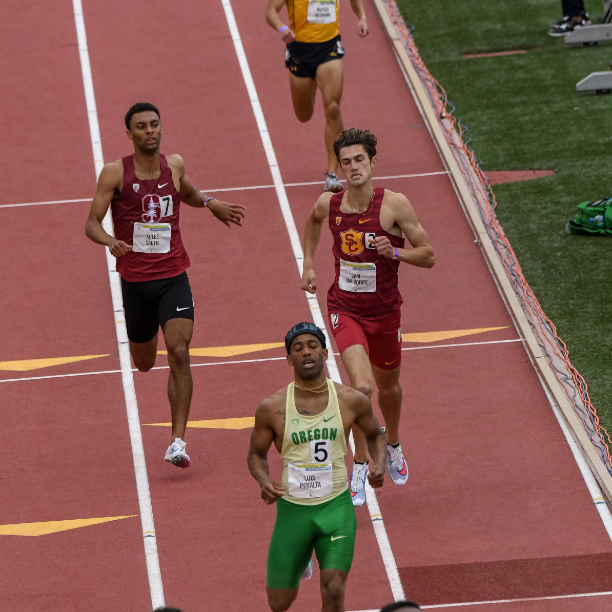
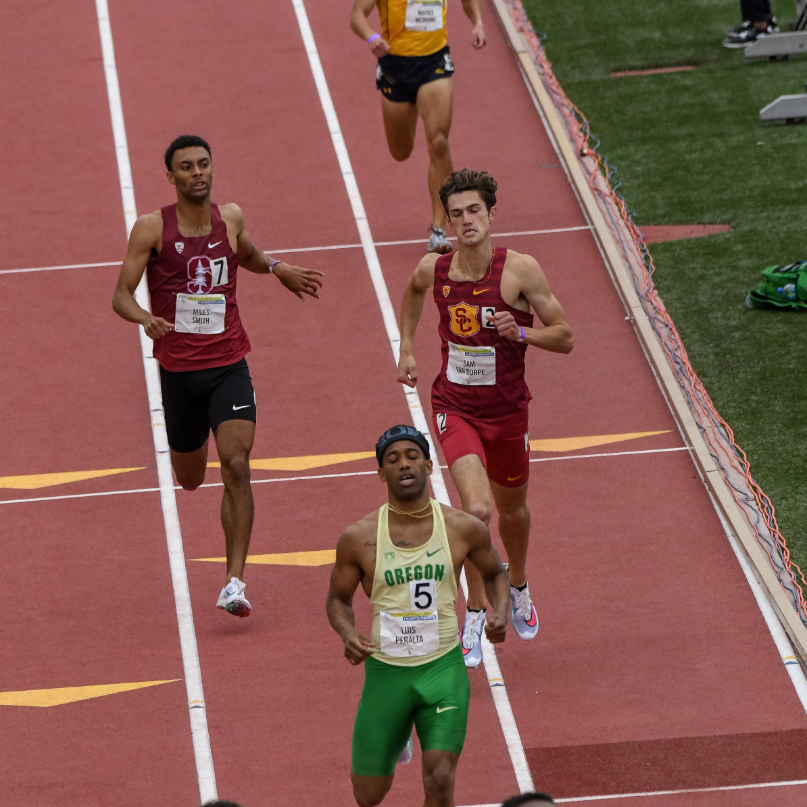

Hi, I'm Miles!
I am a Masters student in Civil and Environmental Engineering at Stanford University and before that I did an undergraduate degree in Mechanical Engineering at the University of Maryland, Baltimore County (UMBC). My current research interests fall within the the domain of energy science and environmentally sustainable technology.
Research
I am currently a rotational student in Prof. Mark Cappelli's research group in the Mechanical Engineering department at Stanford hoping to begin a Ph.D. program in mechanical engineering in the Fall of 2022. There, I am looking to reduce the energy expenditure required for direct air carbon capture. Prior to joining this group I did research at MIT Lincoln Laboratory in Lexington, MA developing low-cost and low energy control algorithms for battery state-of-health estiamtion and worked to develop roadmaps to a 100% renewable energy future in Prof. Mark Jacobson's group in the Civil and Environmental Engineering department at Stanford.
 
